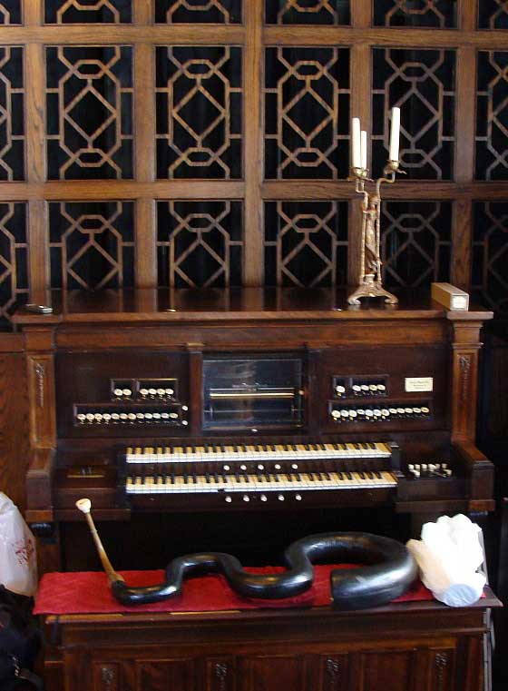
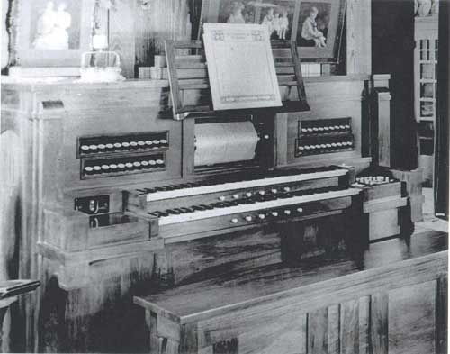

- Index
- Estey Music
Estey Player Organ Music Rolls
1.0 Estey Player Organ e-Roll Archive
This archive contains e-Rolls of Estey Player Organ music. The rolls can be played using eplayestey.2.0 Estey Player Organ Instrumentation
Estey player organ.
Picture Courtesy of the Muscatine Art Center.
This Opus 1660 Estey Player Organ was built in 1919 by the Estey Company of Brattleboro, Vermont. The case style of the organ is in fitting with an Edwardian home, and is plain without the very fancy woodwork of the Victorian era.
A room approximately 18 by 11 feet, screened by a wooden grill behind the organ, houses 731 pipes, 11 manual ranks and 2 pedal ranks, plus chimes and an unusual glass harp. There is also an unusual complement of intra-manual couplers and the tremolo affects the entire organ.
Two Manuals of 61 Notes Each
Stops
- 8' open Diapason
- 8' gross flute
- 8' melodia
- 8' viol d'amour
- 8' viol d'orchestre
- 8' muted viol
- 8' viol celeste
- 4' flauto traverso
- 8' oboe
- 8' saxophone
- 8' vox humana
Percussion
- chimes
- glass harp
30 Pedal Notes
- 16' Bourdon
- 16' Bass viol
3.0 Estey Player Organ Tracker Bar Details
Estey player organ tracker bar details Essential information to fully understand the organ.4.0 Another Estey Player Organ Console
Estey player organ console.